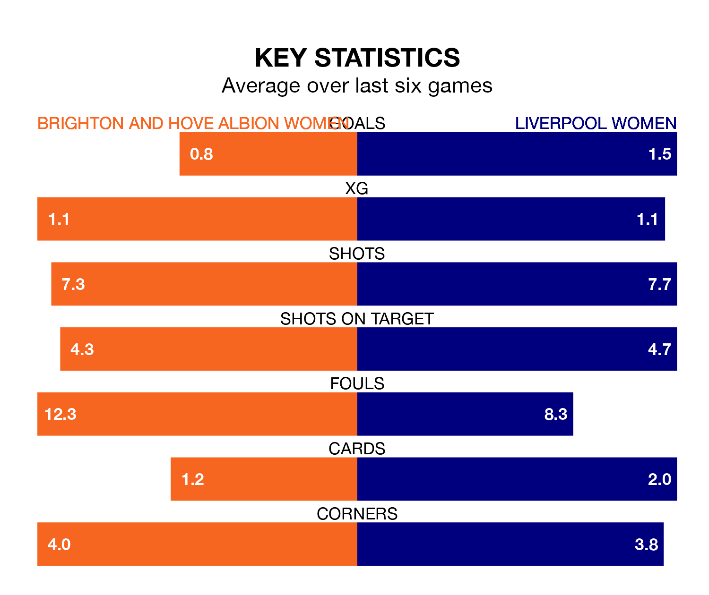

Brighton and Hove Albion Women are on a poor run ahead of hosting Liverpool Women at the Broadfield Stadium on Sunday, with just four points collected from their last six games.
The Seagulls have picked up one win and one draw in their last six FA Women's Super League games, and face a Liverpool side whose last six games have brought two wins and two draws.
Brighton & Hove Albion are 11th in the table after 13 games, of which they have won three and drawn two, earning 11 points.
Liverpool are six places ahead of the Seagulls in fifth, with five wins and four draws putting them on 19 points.
In the last 10 years, Brighton & Hove Albion and Liverpool have played each other on six occasions. Brighton & Hove Albion won two of them, Liverpool three, and they drew once.
On average, the Seagulls scored 1.2 goals and Liverpool 1.7 in those matches.
Their last meeting was on November 26, when Liverpool won 4-0 at home.
In Elisabeth Terland, the home side have one of the league's sharpest shooters so far this season. She has notched nine goals in 13 appearances, to sit third in the scoring charts.
Her goal rate of one every 112 minutes is quicker than that of Marie Therese Höbinger, the visitors' top scorer with a goal every 207 minutes, and a total of four goals in 13 games.
With 13 goals in 13 games so far this season, Brighton & Hove Albion are the league's second-lowest scorers with 1.0 goals per game. And they are conceding more than average, letting in 29 goals at a rate of 2.2 per game.
Liverpool are also below average scorers, with 1.3 goals per game, compared to a league average of 1.6. They have conceded 1.5 goals per game.
Brighton & Hove Albion's last match was on February 4, a 2-0 loss against Manchester United Women.
Liverpool drew 1-1 with Tottenham Hotspur Women last time out, also on February 4, with Höbinger on the scoresheet.
Updated: 13:52 (UTC), 05/02/24